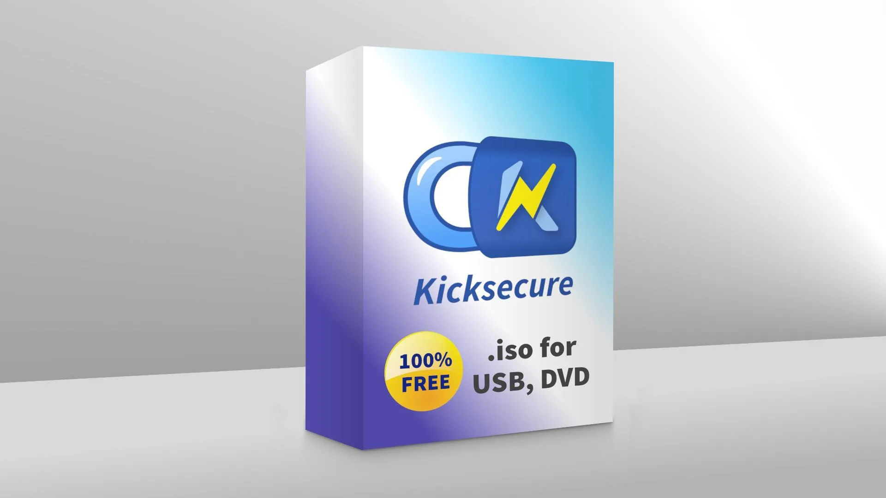
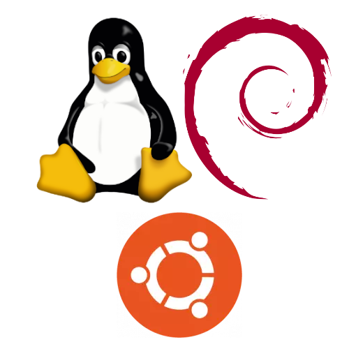
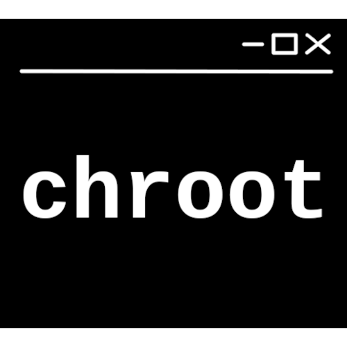
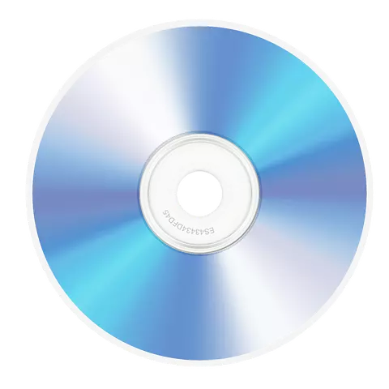
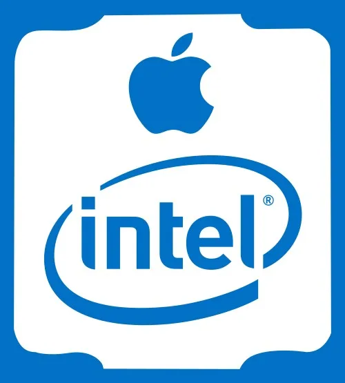
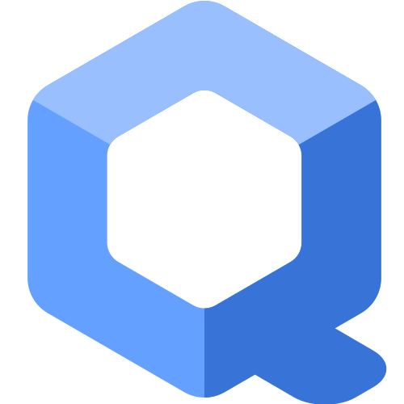

Download Kicksecure (FREE)

Kicksecure is available on the following platforms.
Kicksecure can be installed on a physical machine as the host operating system (OS), as a guest OS inside a virtual machine, or as a portable host OS on a USB data stick.
Installation
on
Computer USB
Installation
USB
Installation
 Windows
Windows macOS
macOS VirtualBox
VirtualBox Qubes
Qubes KVM
KVM
 Installation
on Intel /
AMD64Installation
on
ARM64
Installation
on Intel /
AMD64Installation
on
ARM64 Installation
on
(RPi)
Installation
on
(RPi) Installation
on ppc64el
(POWER9/10)
Installation
on ppc64el
(POWER9/10) Installation
on RISCV64
Installation
on RISCV64
 Install
Kicksecure on Debian (transform Debian into
Kicksecure)
Install
Kicksecure on Debian (transform Debian into
Kicksecure) Source
Code
Source
Code
Read more about which version is best for you.
Logo |
Version |
Knowledge |
|---|---|---|
 |
ISO |
|
|
USB |
|
ARM64 |
||
|
Raspberry Pi (RPi) |
|
|
ppc64el |
|
|
RISCV64 |
|
|
Debian |
|
|
Windows |
|
 |
Apple - Intel-based MacBook |
|
|
Apple - Apple Silicon |
|
Apple - Non-Apple Hardware Hackintosh |
||
|
Linux |
Run Kicksecure in the VirtualBox virtualizer (Linux installer) |
VirtualBox |
||
 |
Qubes |
|
|
KVM |
|
chroot |
||
|
Source Code |